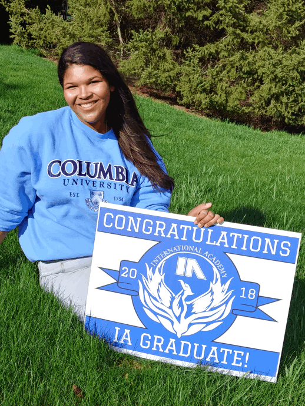

Eve is graduating from the International Academy and is planning to attend college at Columbia University in New York City. Eve hopes to pursue a career tha uses techonolgy and works with non-profit organizations or the United Nations. Eve is a leader in a variety of school, non-profit and community service activities.

Meet Eve.
Eve Washington is the daughter of Suane Loomis and Randall Washington. Eve graduates from the International Academy High School in May 2018. Eve is planning to attend college in the fall of 2018 at Columbia University in the City of New York. She intends to study Engineering/Applied Science and International Human Rights and Sustainability. Eve hopes to pursue a career that assists with shaping public policy and living conditions, by using techonolgy and working with non-profit organizations or the United Nations.
Eve is a leader in a variety of school, non-profit and community service activities. Eve has served as the Vice President, Treasurer, and Secretary for the Black Student Association at the International Academy (IA), and currently serves as the President during her senior year, She is committed to inspiring students and fostering community understanding of racial and social justice problems. Eve has been a member of High School Varsity Cheer Team, the Detroit Yacht Club Sailing team, and the International Academy Chemistry Olympiad Team. She is a Forensics Team speaker and a Model United Nations delegate. In addition, Eve has received honors as a member of National Honor Society, National Spanish Honor Society, and National Art Honor Society.